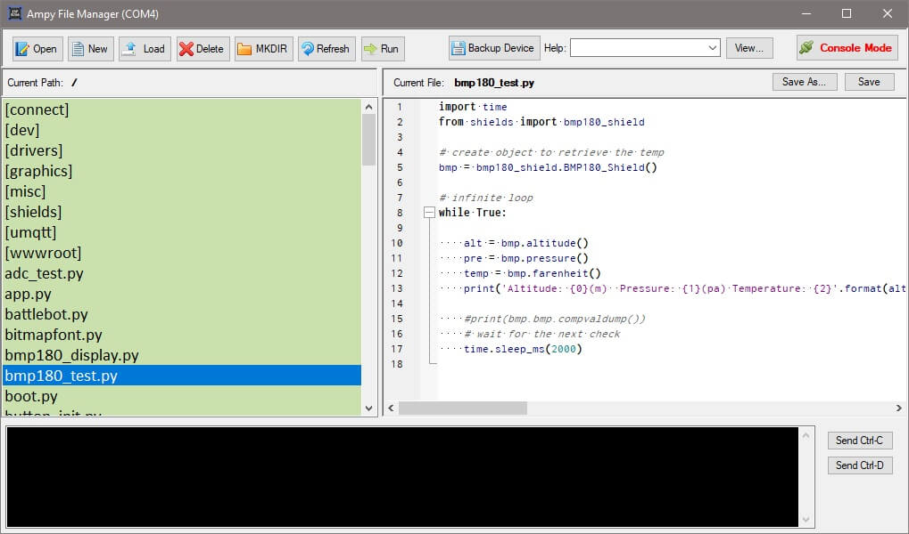

Ampy File Manager
If you are on a Windows machine, you can use a graphical application to manage your Pocket Cloud device.

Installing The Application
- Install Python 3
https://python.org/
- Install Adafruit AMPY. At a command prompt enter:
pip install adafruit-ampy
- Unzip the application from
http://wezensky.no-ip.org/shared/afm.zip
- Run the main executable AmpyFileManager.exe